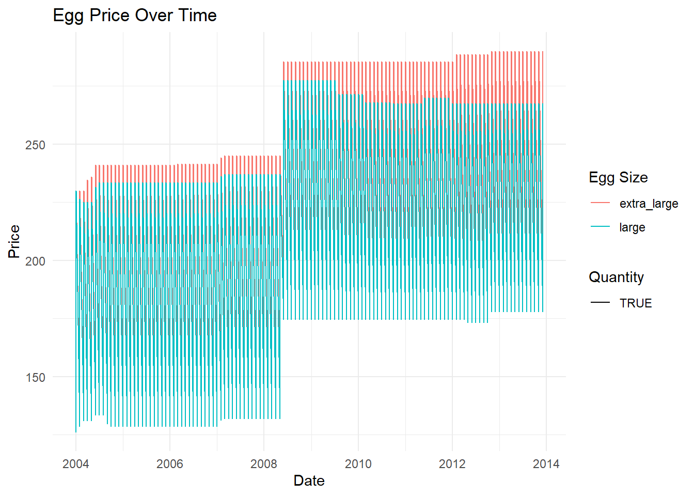
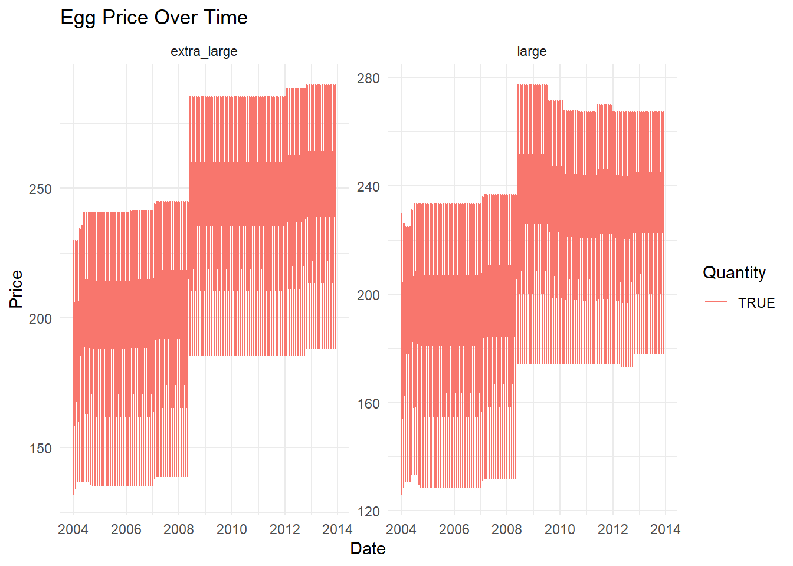
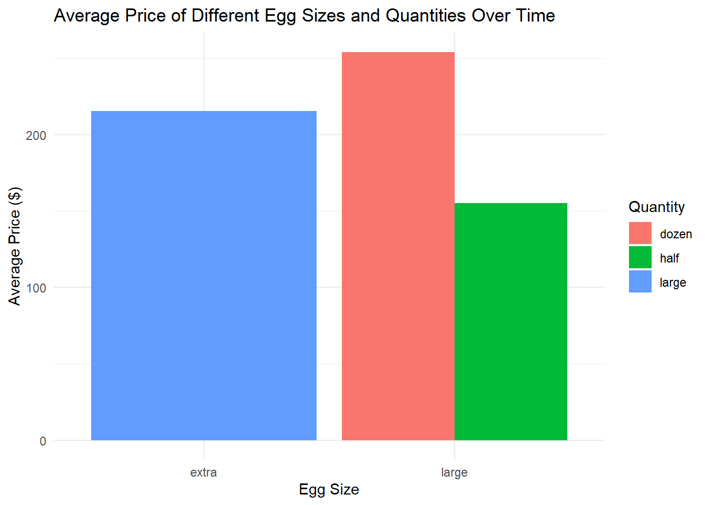

library(tidyverse)
library(ggplot2)
knitr::opts_chunk$set(echo = TRUE, warning=FALSE, message=FALSE)Challenge 7 Submission
challenge_7
eggs
Visualizing Multiple Dimensions
Challenge Overview
Today’s challenge is to:
- read in a data set, and describe the data set using both words and any supporting information (e.g., tables, etc)
- tidy data (as needed, including sanity checks)
- mutate variables as needed (including sanity checks)
- Recreate at least two graphs from previous exercises, but introduce at least one additional dimension that you omitted before using ggplot functionality (color, shape, line, facet, etc) The goal is not to create unneeded chart ink (Tufte), but to concisely capture variation in additional dimensions that were collapsed in your earlier 2 or 3 dimensional graphs.
- Explain why you choose the specific graph type
- If you haven’t tried in previous weeks, work this week to make your graphs “publication” ready with titles, captions, and pretty axis labels and other viewer-friendly features
R Graph Gallery is a good starting point for thinking about what information is conveyed in standard graph types, and includes example R code. And anyone not familiar with Edward Tufte should check out his fantastic books and courses on data visualizaton.
(be sure to only include the category tags for the data you use!)
Read in data
Read in one (or more) of the following datasets, using the correct R package and command.
- eggs ⭐
- abc_poll ⭐⭐
- australian_marriage ⭐⭐
- hotel_bookings ⭐⭐⭐
- air_bnb ⭐⭐⭐
- us_hh ⭐⭐⭐⭐
- faostat ⭐⭐⭐⭐⭐
we choose eggs ⭐ for this challengs
data <- read_csv("_data/eggs_tidy.csv")
dataBriefly describe the data
The dataset eggs_tidy.csv appears to be a time-series dataset that contains information on egg prices for the years 2004 to 2013. Each row represents a month in a specific year.
There are six columns in the dataset:
1.month: This column contains the name of the month for each observation.
2.year: This column contains the year for each observation.
3.large_half_dozen: This column represents the price of a half dozen large eggs for a particular month in a particular year.
4.large_dozen: This column represents the price of a dozen large eggs for a particular month in a particular year.
extra_large_half_dozen: This column represents the price of a half dozen extra-large eggs for a particular month in a particular year.
5.extra_large_dozen: This column represents the price of a dozen extra-large eggs for a particular month in a particular year.
6.The data includes numeric values that represent the prices in presumably some sort of currency, though the dataset does not explicitly state the currency used.
In summary, this dataset seems to be tracking the change in price of different quantities and sizes of eggs over a span of about ten years, on a monthly basis. It could be used for a variety of analyses, such as understanding trends in egg pricing, seasonality effects, or the rate of price inflation over time for this specific good.
Tidy Data and mutatee variables (as needed,including sanity checks)
The month and year columns can be joined to make a single ‘date’ column:
# We use 'make_date' to create a new 'date' column.
# Then we remove the old 'month' and 'year' columns with 'select(-c(month, year))'.
data <- data %>%
mutate(date = make_date(year, match(month, month.name), 1)) %>%
select(-c(month, year))
# Let's look at the first few rows again.
head(data)check that the data
# The 'is.na' function finds missing values. We add them up with 'colSums'.
colSums(is.na(data)) large_half_dozen large_dozen extra_large_half_dozen
0 0 0
extra_large_dozen date
0 0 # 'anyDuplicated' will tell us if there are any repeated rows.
anyDuplicated(data)[1] 0# We use 'any' to check if there are any negative prices.
# The '< 0' means 'less than zero'.
any(data$large_half_dozen < 0)[1] FALSEany(data$large_dozen < 0)[1] FALSEany(data$extra_large_half_dozen < 0)[1] FALSEany(data$extra_large_dozen < 0)[1] FALSEVisualization with Multiple Dimensions
- Example 1. A line graph that distinguishes between “large” and “extra large” eggs using color, and between “half dozen” and “dozen” using line type.
We first need to reshape the data to make it suitable for this kind of graph. We’ll use the pivot_longer function to do this:
eggs_long <- data %>%
pivot_longer(-date, names_to = "egg_size", values_to = "price")
#Now we create the graph:
ggplot(eggs_long, aes(x = date, y = price, color = str_extract(egg_size, "large|extra_large"), linetype = str_detect(egg_size, "dozen"))) +
geom_line() +
labs(x = "Date", y = "Price", color = "Egg Size", linetype = "Quantity", title = "Egg Price Over Time") +
theme_minimal()
- Example 2. Two separate line graphs for “large” and “extra large” eggs using facetting.
ggplot(eggs_long, aes(x = date, y = price, color = str_detect(egg_size, "dozen"), linetype = str_detect(egg_size, "dozen"))) +
geom_line() +
facet_wrap(~str_extract(egg_size, "large|extra_large"), scales = "free_y") +
labs(x = "Date", y = "Price", color = "Quantity", linetype = "Quantity", title = "Egg Price Over Time") +
theme_minimal()
- Example 3. using color to differentiate between the different egg sizes and quantities.
# Split the combined factor into size and quantity
eggs_long <- data %>%
pivot_longer(cols = c("large_half_dozen", "large_dozen", "extra_large_half_dozen", "extra_large_dozen"),
names_to = "Type",
values_to = "Price") %>%
separate(Type, into = c("Size", "Quantity"))
# Compute the average price for each type of egg
average_price <- eggs_long %>%
group_by(Size, Quantity) %>%
summarize(Avg_Price = mean(Price))
# Create the bar graph
ggplot(average_price, aes(x = Size, y = Avg_Price, fill = Quantity)) +
geom_bar(stat = "identity", position = "dodge") +
labs(x = "Egg Size", y = "Average Price ($)", fill = "Quantity") +
theme_minimal() +
ggtitle("Average Price of Different Egg Sizes and Quantities Over Time")
Example 1: A Line Graph Distinguishing Between “Large” and “Extra Large” Eggs Using Color and Line Type
I chose a line graph because it’s a powerful way to visualize trends over time. By displaying the price data over time, it allows us to see trends or fluctuations, such as seasonal patterns or notable price changes.
In this graph, I decided to differentiate between egg sizes using color and between quantities using line type. This is because color is often the first thing our eyes notice when looking at a graph, making it an effective tool for distinguishing between major categories, in this case, “large” and “extra large”.
Line type (solid vs. dashed lines), on the other hand, is more subtle and is thus used to differentiate the secondary categories: “half dozen” and “dozen”. By using these two attributes together, we can quickly see the four different combinations of size and quantity on the same graph.
Example 2: Faceted Line Graphs for “Large” and “Extra Large” Eggs
The second graph uses facetting to create two separate graphs for “large” and “extra large” eggs. Facetting is a technique that allows us to split one graph into multiple graphs based on a factor variable.
I chose this approach because it allows us to compare the trends for “large” and “extra large” eggs directly, without the potential confusion of overlapping lines. Each graph has its own y-axis, which allows us to assess the price trends for each egg size independently. This is particularly useful when the trends are similar, but the actual values are quite different, which could be the case here.
In both graphs, I used line type and color to distinguish between “half dozen” and “dozen”. This is consistent with the first graph, and it allows us to see the price trends for different quantities within each egg size.
Example 3: using color to differentiate between the different egg sizes and quantities.
In this bar graph, the x-axis represents the egg size (large or extra-large), the y-axis represents the average price, and the colors of the bars represent the quantity (half a dozen or a dozen). Each egg size has two bars, one for each quantity, which allows for easy comparison between the different types of eggs.
This kind of graph is easier to interpret than the scatter plot, especially for audiences that aren’t accustomed to reading more complex visualizations. The trade-off is that it doesn’t capture changes over time. However, it does provide a clear, straightforward comparison of the average prices of different types of eggs.